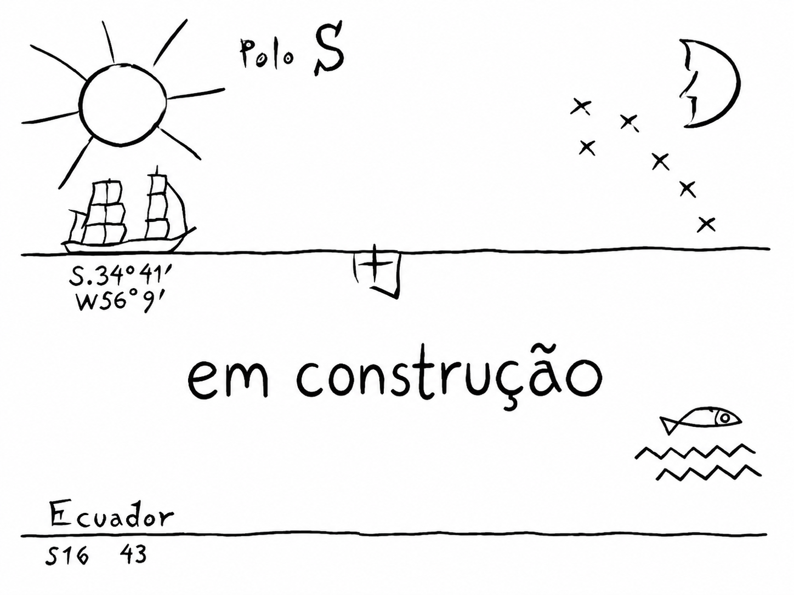

Apresentação da pesquisa
Esta plataforma está intrinsecamente vinculada ao projeto de pesquisa de doutorado Movimento operário na resistência à Ditadura Civil-Militar: lutas por educação e iniciativas educacionais da Oposição Sindical Metalúrgica de São Paulo, orientado pela Profa. Dra. Carmen Sylvia Vidigal Moraes (2021–). Ao mapear relações semânticas entre indivíduos, sindicatos e aparatos de repressão estatal em um grafo de conhecimento abrangente, o Atlas oferece subsídios para a investigação da evolução histórica de categorias jurídicas relacionadas à violência de Estado e às violações de direitos humanos. Por meio da interoperabilidade semântica e da estruturação de dados, a iniciativa contribui para a memória, a verdade e a justiça de transição relacionadas às vidas atingidas pelos regimes autoritários latino-americanos.
A pesquisa está em andamento. Seu núcleo histórico principal é a Oposição Sindical Metalúrgica de São Paulo (OSM-SP), com trabalhadores e trabalhadoras, educadores, assessores, comissões de fábrica e organizações envolvidas em processos de mobilização, resistência e formação. A pesquisa incorpora também outros agentes, movimentos sociais, instituições e acontecimentos relacionados. A participação constitutiva em projetos do movimento não deve ser confundida automaticamente com filiação sindical formal.
Pesquisa e desenvolvimento
Millena Miranda Franco desenvolve pesquisa em Educação e estuda Direito na Universidade de São Paulo (USP). É mestra em Educação pela USP, com período de mobilidade Erasmus+ na Universität Potsdam, Alemanha. Desenvolve projeto financiado pela FAPESP, Organização e disponibilização pública de acervo documental envolvendo violência de estado (processo 2025/11544-9), no âmbito da FGV DIREITO SP, sob supervisão da Profa. Dra. Maíra Rocha Machado.
Arquitetura da investigação
O Atlas é uma representação situada do universo documental da pesquisa, não um inventário exaustivo da resistência à ditadura. A estruturação de dados permite transitar entre trajetórias individuais, experiências coletivas, espaços de atuação, temporalidades e categorias jurídicas. As relações registradas são unidades de análise vinculadas às fontes que lhes dão sustentação.
Percursos de investigação e limites do acervo
O Grafo de conhecimento explora a dimensão relacional; a Cartografia, a espacial; Linhas, a temporal. O Lab_Oralidades permite trabalhar a passagem do testemunho à proposição de relações. O Compêndio jurídico articula acontecimentos e categorias normativas; o Oceano semântico permite interrogar as relações; o Horizonte de dados dá acesso às tabelas relacionais; e o Cosmov amplia o percurso bibliográfico.
Esses percursos são complementares, mas não exibem necessariamente os mesmos registros: cada um constitui um recorte do corpus. Ausência na visualização não equivale a ausência histórica. A versão pública preserva referências documentais, mas não disponibiliza integralmente as matrizes de pesquisa nem os excertos inéditos.
Grafo de conhecimento
Representação das relações sociais e organizacionais constituídas em torno da resistência à ditadura civil-militar, com especial atenção à Oposição Sindical Metalúrgica de São Paulo (OSM-SP) e às experiências de educação de trabalhadores. Nesta etapa, a visualização privilegia os sujeitos históricos e suas formas de organização, em vez de representar indistintamente todas as entidades da matriz.
Critérios de representação e leitura do grafo
Entidades e distinções analíticas
Pessoas são sujeitos históricos individualizados, identificados nominalmente ou, em caráter provisório, pela denominação encontrada na fonte. Movimentos representam formas de ação, mobilização ou articulação política coletiva, como a OSM-SP, o Movimento do Custo de Vida e o Comitê Brasileiro pela Anistia. Instituições correspondem às organizações e instâncias identificáveis de atuação, como sindicatos, escolas, empresas, centros de documentação e organismos estatais. A distinção é operacional: movimentos também podem possuir estrutura institucional, e a categoria atribuída a cada entidade não expressa uma hierarquia política, jurídica ou social.
Relações priorizadas
São privilegiados vínculos entre pessoas e organizações, entre organizações e, nas relações interpessoais da matriz, a colaboração e a atuação em projetos educacionais compartilhados. A coparticipação em uma instituição ou movimento não é convertida automaticamente em vínculo pessoal. Acontecimentos, documentos, locais e conceitos jurídicos permanecem registrados na base, mas não são utilizados como pontes para aproximar artificialmente os sujeitos no grafo social.
O recorte de iniciativas educacionais incorpora também relações e entidades extraídas da entrevista coletiva de 27 de setembro de 2026, incluindo identificações provisórias e experiências externas à OSM-SP necessárias à compreensão das redes de formação. A presença no recorte não implica filiação ao movimento. Projeções de percursos relacionais são distinguidas das relações diretamente registradas.
Convenções visuais
O destaque vinho das organizações ligadas à OSM-SP é uma opção de leitura do recorte, não uma classificação exclusiva de iniciativas educacionais. A linha pode reunir vários predicados entre o mesmo par de entidades. O tracejado sinaliza inferências ou registros com indicações de revisão ou atribuição à pesquisadora na visualização principal; uma linha contínua não certifica a suficiência da evidência. Consulte a relação e sua fonte. As linhas não indicam direção, sucessão temporal nem causalidade. O tamanho dos nós responde à categoria, ao número de vizinhos visíveis e ao destaque editorial da OSM-SP; a posição depende do algoritmo de disposição espacial. Nenhum desses atributos mede importância histórica.
Como explorar
Todos apresenta as pessoas e as organizações associadas, com destaque para a OSM-SP. Pessoas, Instituições e Movimentos isolam os respectivos tipos de entidade. Iniciativas educacionais apresenta uma seleção temática de pessoas e organizações relacionadas às experiências formativas. Clique em um nó para destacar as conexões existentes e abrir sua ficha; passe o cursor sobre as linhas para consultar os vínculos, os respectivos estados de revisão e referências disponíveis. Arraste os nós ou a área de visualização e utilize a roda do mouse para ampliar ou reduzir a rede. Na visão geral, os rótulos das organizações aparecem quando recebem foco, evitando sobreposição de nomes.
Os totais de nós e conexões referem-se ao recorte visualizado. Uma conexão gráfica pode reunir mais de uma relação da matriz.
Lugares de memória e resistência
A espacialização do corpus documental permite investigar os territórios de atuação política, repressão, formação e preservação da memória, aproximando a história social dos lugares em que essas experiências se constituíram.
Critérios cartográficos e limites da localização
O vermelho-vinho identifica locais relacionados a acontecimentos registrados ou a lugares de memória e resistência; o vermelho vivo assinala as iniciativas educacionais georreferenciadas; e o cinza identifica os demais locais históricos cadastrados. Essa classificação orienta a leitura, sem tornar as categorias mutuamente exclusivas no plano histórico.
O filtro normativo seleciona acontecimentos associados à categoria escolhida e seus locais. A opção de intensidade modifica o tamanho dos marcadores conforme a quantidade de acontecimentos registrados no recorte. Não se trata de uma medida da intensidade real da repressão nem de um mapa de risco. A localização pode corresponder a um endereço preciso ou a uma aproximação, conforme a fonte disponível. Clique em um marcador para abrir a ficha detalhada sobre o mapa; o painel de leitura conserva a ficha selecionada para consulta.
Conceitos jurídicos
Articulação entre história social e análise jurídica das práticas de resistência, das violações de direitos e das formas de violência de Estado registradas no corpus documental.
Categorias normativas e historicidade do direito
O compêndio distingue conceitos de natureza diversa, como direitos, violações, crimes e categorias analíticas. A comparação entre referências normativas históricas e atuais permite investigar transformações no reconhecimento jurídico das condutas, sem projetar automaticamente a legislação contemporânea sobre o passado nem confundir classificação analítica com condenação judicial.
Selecione um conceito para consultar sua caracterização, seus referenciais jurídicos e as relações com acontecimentos e sujeitos. A aba Eventos relacionados apresenta as triplas e referências disponíveis; Evolução histórica distribui temporalmente os acontecimentos associados ao conceito. A frequência de registros reflete a composição do corpus, não a incidência total das violações.
Oceano semântico
Espaço de exploração das relações que estruturam o Atlas. A consulta semântica permite formular questões sobre o corpus a partir de triplas — sujeito, predicado e objeto —, interrogando não apenas quais entidades estão registradas, mas de que maneira elas se relacionam. O predicado é a unidade que qualifica a relação e permite distinguir, por exemplo, participação política, atuação educacional, representação jurídica e colaboração.
Como formular uma consulta e interpretar os resultados
Selecione o tipo de entidade que ocupa a posição de sujeito, o predicado e o tipo de entidade que ocupa a posição de objeto. Execute a consulta para recuperar as relações correspondentes. A evidência ou referência documental acompanha os registros quando disponível; referências contextuais não devem ser confundidas com prova individualizada da relação. Os predicados educacionais agrupados permitem uma leitura transversal, enquanto o papel específico conserva a distinção entre docência, formação e outras atividades cadastradas.
A arquitetura do projeto original se fundamenta no Resource Description Framework (RDF), com triplas serializadas em Turtle e consultas SPARQL. Na versão atual, as consultas operam sobre as relações carregadas no navegador. O campo avançado admite um subconjunto da sintaxe SPARQL (um padrão de tripla e LIMIT), e não constitui um endpoint SPARQL completo. Os resultados expressam as relações modeladas, não uma busca exaustiva nas fontes primárias.
Resultados da consulta
Horizonte de dados
Camada de consulta às matrizes relacionais da investigação. A organização em tabelas permite acompanhar a passagem das fontes à estruturação dos vínculos e conferir a consistência das relações apresentadas nas demais visualizações.
Estrutura relacional, proveniência e consulta
Cada linha registra uma relação na ordem sujeito–predicado–objeto. As tabelas são organizadas pelos tipos de entidades relacionados: P (pessoa), I (instituição), M (movimento), E (acontecimento), D (documento), L (local) e C (conceito). A visão relacional reúne os vínculos de diferentes tabelas, e o seletor permite restringir a consulta a uma delas. Utilize o campo de pesquisa para localizar nomes, predicados ou referências nas linhas selecionadas.
Identificadores e campos de origem auxiliam a rastreabilidade dos dados. A referência documental situa a relação no corpus; quando a evidência específica não está individualizada na versão pública, isso é sinalizado. Os excertos inéditos e as matrizes integrais permanecem reservados à pesquisa. Registros vazios ou provisórios indicam limites da sistematização, não conclusões sobre a inexistência de vínculos.
Carregar a matriz completa, com evidências, neste navegador
Selecione os CSVs da pasta app/data do seu computador. Nenhum arquivo será transmitido ao Cloudflare.
 Cosmov — Corpora dos Movimentos Sociais
Cosmov — Corpora dos Movimentos Sociais
Cosmov, denominação derivada de Corpora dos Movimentos Sociais, constitui um espaço de exploração e constituição de corpora bibliográficos relacionados aos movimentos sociais investigados no Atlas. A ferramenta articula a recuperação automatizada de publicações pela API OpenAlex à curadoria bibliográfica realizada pela pesquisadora, incorporando manualmente obras pertinentes à investigação que não são recuperadas pela busca automática.
Curadoria bibliográfica e critérios de recuperação
A inserção manual permite contemplar livros, capítulos, dissertações, teses, artigos e outras publicações cuja indexação seja ausente, incompleta ou insuficiente. Uma obra identificada em referências bibliográficas pode integrar o corpus mesmo quando não se localiza seu acesso digital; essa condição é indicada na tabela. As referências selecionadas não dependem da disponibilidade da API.
O sistema procura reunir registros coincidentes mediante DOI, identificador OpenAlex e correspondências de título, autoria, ano e variantes conhecidas. A normalização reduz duplicações, mas não elimina a necessidade de conferência bibliográfica. A busca automatizada permanece exploratória: recuperar uma publicação não implica validá-la como pertinente ao objeto de pesquisa. Os resultados não constituem um levantamento exaustivo nem uma bibliografia sistemática concluída.
Cronologia da resistência
A dimensão temporal da investigação articula acontecimentos, trajetórias e experiências coletivas, permitindo explorar continuidades, rupturas e sobreposições entre diferentes processos históricos registrados no corpus.
Temporalidade, periodização e tratamento das datas
A cronologia reúne acontecimentos e intervalos de vínculos registrados na matriz pública. As camadas de repressão e violações, resistência e organização, educação e formação e outros registros são recortes analíticos da visualização. As barras contabilizam o início dos registros por ano, enquanto a seleção de um ano recupera os registros datados que coincidem com ele. Um vínculo iniciado antes do intervalo pode aparecer quando seu término registrado se sobrepõe ao período escolhido.
Datas parciais são preservadas em sua precisão original; registros sem início temporal seguro ficam disponíveis separadamente. Ausência de término não comprova permanência do vínculo. As quantidades representam registros da pesquisa, não a intensidade histórica dos fenômenos.
Carregando matriz pública…
As barras indicam registros iniciados em cada ano, não intensidade histórica. Selecione um ano para examinar os registros que se sobrepõem a ele. Um início sem término não representa duração comprovada.
Registros no período
Registros sem início temporal seguro
Lab_Oralidades

Laboratório de leitura e curadoria de fontes orais, concebido para explorar a passagem da narrativa dos sujeitos históricos à estruturação de relações no Atlas. A leitura das entrevistas preserva a localização do trecho e a atribuição do interlocutor, permitindo formular, discutir e revisar proposições semânticas a partir dos testemunhos.
Do testemunho à relação semântica
O formato de conversa facilita a navegação por falas; não representa uma troca de mensagens original nem substitui a entrevista integral. A seleção de um trecho permite propor uma relação entre sujeito, predicado e objeto, indicar sua fonte e registrar o estatuto da interpretação. A segmentação e a identificação dos interlocutores devem ser conferidas na transcrição.
Uma menção nominal não comprova participação, filiação ou colaboração. A distinção entre relação documentada no excerto, inferência analítica, evidência insuficiente e proposta a revisar explicita etapas de interpretação da fonte oral. As propostas exportadas podem ser compartilhadas para revisão, mas não ingressam automaticamente nas matrizes oficiais. A curadoria preserva a diferença entre testemunho, interpretação e representação dos dados.
Área experimental local. Não há autenticação, submissão ao servidor ou publicação automática. O texto e as propostas ficam apenas na memória desta aba até a exportação; recarregar a página os apaga. Não utilize dados sensíveis em computadores compartilhados.
O acervo permanece neste navegador. Selecione uma entrevista após carregar o arquivo.
Entrada manual e importação de propostas
Documento e excerto
Fila de revisão
A colaboração neste piloto ocorre por troca de arquivos JSON. Nenhuma proposta é inserida automaticamente no grafo ou no repositório de dados. Uma relação documentada exige conferência humana.